RESOLVENDO PROBLEMAS COM CÓDIGO
RESOLVENDO PROBLEMAS COM CÓDIGO

Olá! Meu nome é Gabriel Lacerda, sou um profissional especialista em resolver problemas com programação para qualquer nicho de negócio.
Atualmente curso Técnologo em Desenvolvimento de Sistemas, e pretendo me especializar na área cursando Engenharia de Software.
Tenho certeza que você vai querer um profissional que sabe desenvolver interfaces responsivas, e automatizar processos que levariam horas em minutos para sua empresa.
STACKS | TECNOLOGIAS | FERRAMENTAS DE TRABALHO
 Banco de Dados
Banco de Dados
 Racíocinio lógico
Documentação
Racíocinio lógico
Documentação

Programação
- Desenvolvimento de páginas responsivas e dinâmicas com HTML, CSS, JavaScript.
- Consumo e manipulação de dados no Front-End através do recurso fetch.
- Desenvolvimento de API’s, criação de rotas, tratamento de erros, requisições http para o banco de dados através de comandos SQL.
- Criação de scripts SQL para consultas, criação, atualização e delete de dados. (DDL, DML)
- Criação de diagramas de banco de dados, diagrama conceitual, e lógico.
- Capacidade de analisar, entender, e resolver o problema seja com ou sem código.
- Processo de gerenciamento, e acompanhamento de projetos através de sprints, metodologias ágeis e tradicionais.
- Levantamento de requisitos com o cliente.